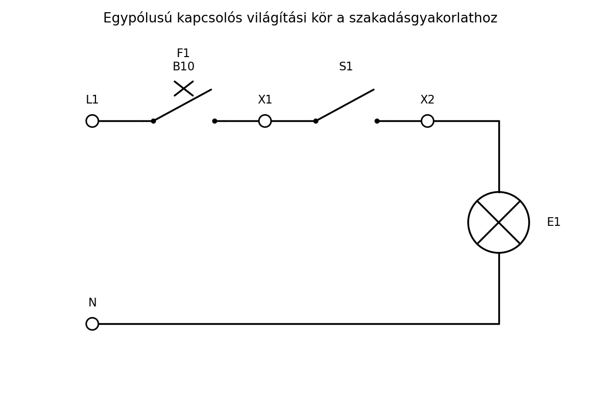

Egy lakásfelújítás után a megrendelő azt jelzi, hogy a nappali lámpája nem kapcsolható fel, a konyhai aljzatról pedig leold a kismegszakító. A szerelő két utat választhat: alkatrészt cserél találomra, vagy a tünetből kiindulva, rajz és mérés alapján megkeresi a hibát. A vizsgán és a munkahelyen is az utóbbi az elvárt. Ebben az alfejezetben szándékosan hibás tanműhelyi modelleken gyakoroljuk a hibakeresést, mert a későbbi motorbeüzemelésnél és a gyakorlati vizsgán ugyanezt a gondolkodásmódot kell használni.
Nézzünk egy egypólusú kapcsolós világítási alapáramkört, amelyben a gyakorlat során az egyik szakaszon szándékos szakadást rejtettek el:

A rajzon az L1 fázis a felső, az N nulla az alsó vezető. Ha az F1 és az S1 közötti szakaszt megszakítjuk, a lámpa nem világít, de a kismegszakító nem old le. A feladatunk, hogy ezt a hibát ne találgatással, hanem mérésekkel határoljuk be.
Definíció. A hibakeresés olyan módszeres eljárás, amelyben a meghibásodott villamos berendezés tünetéből kiindulva, a kapcsolási rajz és mérések segítségével behatároljuk a hibás elemet, szakaszt vagy kötést.
A Jegyzőkönyv, szabványossági felülvizsgálat és hibakeresés alfejezetben már bevezetett sorrendet itt is követjük: tünet → hipotézis → mérés → ellenőrzés. Ez a gondolati lánc azért fontos, mert a villamos hiba gyakran nem látható; csak a mérés dönti el, hogy a feltételezésünk igaz-e.
A módszer általános lépéseit (tünet rögzítése, rajz, hipotézis, mérés, javítás és újraellenőrzés) a Jegyzőkönyv, szabványossági felülvizsgálat és hibakeresés tárgyalja; itt egy gyakorlati segédletet adunk hozzá. Az alábbi tünetalapú hibafa azt mutatja meg, hogy egy épületvillamossági tünetből melyik első méréssel érdemes indulni, és melyik hibakártya (HK1–HK6, lásd a feladatgyűjtemény 40.3 szakaszának „Hibakeresési feladatok gyűjteménye” szakaszát) írja le a valószínű hibát. Az alakok jelentése: rombusz = kérdés, téglalap = mérés, lekerekített keret = hiba.
A „felügyelt” jelzésű mérés feszültség alatti, ezért csak jogosult oktató felügyelete mellett végezhető; minden más mérés feszültségmentesen, az öt biztonsági szabály után. Kövesd végig a (4) ágat: miben különbözik az N-szakadás és a fázisszakadás tünete, ha a foglalaton csak L–N között mérsz? A HTML-kiadásban egy csomópontra mutatva vagy kattintva megjelenik a mérés vagy a hiba részletes leírása.
Szabály. A hibakeresést mindig a tünet pontos leírásával kezdjük. Rögzítsük, mi nem működik, mi működik, mikor jelentkezett a hiba, és történt-e előtte valamilyen beavatkozás. Ezután vegyük elő a kapcsolási rajzot, és csak azután állítsunk fel ellenőrizhető feltételezést.
Biztonsági korlát. A feladat tanműhelyi (törpefeszültségű) környezetre vagy jogosult oktató felügyeletére vonatkozik; hálózati feszültségen önállóan ne végezd. A hibakeresési gyakorlatokban is alkalmazd az öt biztonsági szabályt: lekapcsolás, visszakapcsolás elleni biztosítás, feszültségmentesség ellenőrzése, földelés és rövidre zárás, szomszédos feszültség alatti részek lefedése.
Szakadás. A vezető folytonossága megszűnt. Tünet: az áramkör nem záródik, a fogyasztó nem működik, de nincs túláram. Mérése: folytonosságvizsgálóval vagy multiméter ellenállásmérő állásában a szakaszon végtelen ellenállást (OL) mérünk.
Zárlat. Két különböző potenciálú pont közvetlenül, kis ellenálláson keresztül összekötődik. Tünet: a kismegszakító vagy biztosító azonnal leold. Mérése: a zárlatos pontok között közel 0 Ω ellenállást mérünk, és a szigetelési ellenállás is nulla.
Szigetelési hiba. A fázis és a védővezető (vagy idegen vezető) közötti szigetelés meggyengül. Tünet: az áram-védőkapcsoló (FI-relé) leold, bár a kismegszakító nem feltétlenül. Mérése: szigetelésmérővel a fázis és PE között a határérték alatti értéket mérünk.
Rossz bekötés. Az áramkör fizikailag összeáll, de nem a rajz szerint működik. Például egy váltókapcsoló kivezetéseit felcserélték, vagy a nullát kapcsolják a fázis helyett. Tünete változatos: a kapcsoló nem a várt módon működik, vagy kétpólusú feszültségvizsgálóval a nulla oldalon a PE-hez képest feszültség mérhető. Mérése: folytonosság- és feszültségméréssel feltérképezzük a tényleges bekötést.
Valós eset. Egy családi házban az áram-védőkapcsoló éjszaka leold, amikor a kerti aljzatot használják. A szerelő a tünetből indul: az FI-relé rendszeresen leold, de a kismegszakító nem. Hipotézise szerint szigetelési hiba van a kültéri aljzatkörben.
Hipotézis. A kerti aljzatban vagy a kültéri kötődobozban nedvesség okozott szigeteléscsökkenést.
Mérés. Feszültségmentesítés után az L és PE között szigetelésmérést végez. A műszer 0,08 MΩ-t mutat, ami jóval a kisfeszültségű berendezéseknél megkövetelt határérték alatt van. A mérés megerősíti a szigetelési hibát.
Ok. A kültéri szerelvény dobozába víz folyt be, a sorkapocs környéke korrodált. Javítás. A szerelő kicseréli a kültéri aljzatot IP44-es védettségűre, a dobozt tömíti, és a sérült vezetékszakaszt eltávolítja. Megelőzés. Kültéri körökhöz mindig megfelelő IP-védettségű szerelvényt és vízzáró kábeltömszelencét választunk.
A további tipikus FI-hibákat (azonnali kioldás, közös nulla, N–PE kapcsolat alelosztóban) az Áram-védőkapcsoló (FI) és kiegészítő védelem alfejezet „Hibakeresés FI-s körökben” szakasza rendezi táblázatba. Ezek a modellbe szándékos hibaként is beépíthetők.
Fizikai modell nélkül is gyakorolhatod a tünet → mérés → diagnózis láncot. Az alábbi szimulátor a Lakáselosztó építése és bekötése alfejezet modelljét mutatja (Q1 főkapcsoló, Q2 FI 30 mA, F1 B10 világítás S1 kapcsolóval és E1 lámpával, F2 B16 aljzatkör egy 2 kW-os fém házas fogyasztóval, F3 B16 mosógépkör), betűzött mérőpontokkal. A körök N-leválasztói (XN1–XN3) a N-szakaszoló sorkapcsot, az XF2/XF3 a fogyasztó dugvilláját modellezik: szigetelésméréskor ezekkel választod le a nullát és a fogyasztót.
A HTML-kiadásban három szint közül választhatsz (1 – egy hiba az alapkészletből, 2 – egy hiba a 14 hibás készletből, 3 – két egyidejű hiba). Ellenállást és szigetelést csak Q1 KI után mérhetsz; feszültséget csak az „Oktató jelen” jelölő bekapcsolásával – ez emlékeztet arra, hogy feszültség alatti mérés a valóságban csak felügyelettel végezhető. Pontozás: a helyes diagnózis 10 pontot ér, a hatodik mérés felett minden további mérés −0,5 pont, a feszültség alatti ellenállásmérés kísérlete −5 pont. A mérési napló szövegfájlként letölthető: ez a hibajegyzőkönyv vázlata. Figyeld meg, mit mutat a szigetelésmérő, ha egy kör fogyasztóját nem kötöd le!
A feszültségértékek értelmezéséhez a potenciál-szemlélet kell: ismételd át az Atom, töltés, feszültség, áram és ellenállás alfejezet potenciálról és vonatkoztatási pontról szóló részét, majd a Soros kapcsolás és feszültségosztó „Gyakorló: hibakeresés soros körben” szakaszát.
Mért értékek a HK1–HK6 kártyákhoz (példaadatok; a folytonosságot és a szigetelést feszültségmentesen, a „felügyelt” méréseket csak jogosult oktató felügyeletével):
| Kártya | Mért értékek (példa) |
|---|---|
| HK1 | F1 kimenet – S1 bemenet: OL; F1 kimenet – X1 bemenet: 0,1 Ω |
| HK2 | S1 be, felügyelt: foglalat fázispontja – PE 230 V; a foglalaton L–N 0 V |
| HK3 | L–N 0,3 Ω; szigetelés L–N 0,00 MΩ |
| HK4 | fogyasztó lekötve: L–PE 0,05 MΩ; L–N 50 MΩ |
| HK5 | állástábla: a lámpa csak az (1,1) állásban ég, a másik háromban sötét |
| HK6 | felügyelt: „fázis” jelű kapocs – PE 0 V; „nulla” jelű kapocs – PE 230 V |
HK7 – Laza kötés az aljzatkörben. Tünet: az aljzat környéke melegszik, a fűtőtest „gyenge”. Mérés (felügyelt, 2 kW-os fűtőtesttel, ): az elosztóban 228 V, az aljzaton 220 V. A körön eső 8 V-ból , míg a 20 m-es, 2,5 mm²-es kör várható hurokellenállása . A többlet kb. ; ha egyetlen kötésben van, ott hő keletkezik. Javítás: kötődobozonként bontás, nyomaték szerinti újrakötés (sérült vég levágása), ismételt mérés.
HK8 – A PE nincs bekötve az aljzatban (rejtett, veszélyes hiba). Tünet: nincs, minden működik. Mérés: a fő PE-kapocs és az aljzat PE-érintkezője között OL; a háromlámpás aljzatvizsgáló „PE hiányzik” jelzése (lásd Védelmi mérések gyakorlata és a jegyzőkönyv kitöltése). Javítás: a PE bekötése, utána a folytonosság 1 Ω alatt (ellenőrizendő: mérési utasítás, a vezeték hosszából számolt érték).
HK9 – A nullavezető szakadása háromfázisú elosztásnál. Tünet: egyes lámpák túl fényesek, mások halványak, elektronikus készülékek tönkremennek. Számpélda: L1-en 2 kW (), L2-n 0,5 kW (), L3 terheletlen. Szakadt N-nél a két terhelés sorosan kerül a 400 V-ra: , így az L1 terhelésén 80 V, az L2 terhelésén 320 V esik. Mérés (felügyelt): a fázis–N feszültségek erősen eltérnek (80 V, illetve 320 V), a fázis–PE feszültség 230 V. Javítás: az N-kötés helyreállítása és a károsodott készülékek ellenőrzése; a jelenség magyarázata: Háromfázisú teljesítmény, aszimmetria és a nullavezető. Ezt a hibát a modellen csak törpefeszültségű háromfázisú forrással szabad bemutatni, kisebb értékekkel.
HK10 – L és PE felcserélve az aljzatban (életveszélyes hiba). Tünet: a fém házú készülék nem működik, a háza viszont a fázisra kerül; ha a ház máshol is földelt, a bedugáskor a kismegszakító vagy a FI old. Mérés csak feszültségmentesen: az aljzat „L” kapcsa és a fő PE-kapocs között ≈ 0 Ω; az aljzatvizsgáló hibás bekötést jelez (ezt csak oktatói mérésként, működő aljzaton lehet ellenőrizni). Az oktató ezt a hibát csak feszültségmentes modellen építheti be; a hibás modellt feszültség alá helyezni tilos. Javítás: a két ér helyes kapocsra kötése, folytonosságmérés.
A tünetalapú hibafán a HK7 és a HK9 a „rendellenes működés” ágra, a HK10 a leoldásos vagy „nem működik” ágra tartozik; a HK8 egyik ágon sem jelenik meg, mert nincs tünete – ezt csak a kötelező PE-folytonosságmérés találja meg.
A „rejtett” hibák (háromfázisú N-szakadás, N–PE összekötés a FI után, közös nulla két FI között, PE-szakadás) mérési esettanulmányai a Jegyzőkönyv, szabványossági felülvizsgálat és hibakeresés alfejezetben vannak, és modellváltozatként is feladhatók. Törpefeszültségű modellre érzékelős és buszos hibák is beépíthetők az Érzékelők: fény, mozgás, jelenlét, hőmérséklet (összehegedt relé, derengés) és a KNX, DALI és más épületautomatikai rendszerek (felcserélt buszpólus, hiányzó csoportcím) hibatáblái alapján.
A hibát és a javítást ugyanúgy dokumentálni kell, mint a szabványossági felülvizsgálatnál. Üres lap: Nyomtatható jegyzőkönyvek és sablonok, B5; a döntési útvonalak: Hibafák gyorsreferenciája. A jegyzőkönyv minimális mezői:
A javítási terv tartalmazza a szükséges anyagokat, a munkalépéseket, a becsült időt és a biztonsági intézkedéseket. A dokumentálás nem formalitás: ha a hibát később újra jelentik, a jegyzőkönyv segít visszakeresni, mit mértünk és mit javítottunk.
Továbbvitt eredmény. A tünet → hipotézis → mérés → ellenőrzés módszert, valamint a hibajegyzőkönyv kitöltését használni fogod a motor kapocsbekötése és beüzemelése során (Motor kapocsbekötése és beüzemelése), és a gyakorlati vizsgán is ezt a dokumentálási rendet kérik számon (Gyakorlati vizsgafeladatok és hibakeresés, értékelési szempontok).
Hiba 1. Találomra cserélgetés. A tanuló először kicseréli a kapcsolót, majd a lámpát, miközben a szakadás a sorkapocsban van. Helyes gyakorlat. Előbb méréssel határold be a szakaszt.
Hiba 2. Feszültség alatt mérés, ha nem jogosult. A hálózati feszültségű modellen a tanuló feszültség alatt próbál folytonosságot mérni. Helyes gyakorlat. Feszültségmentesíts, és ellenőrizd a feszültségmentességet.
Hiba 3. A mérési eredmény elutasítása. A tanuló ragaszkodik ahhoz, hogy a hiba a kismegszakítóban van, pedig a mérés szerint a vezeték szakadt. Helyes gyakorlat. A mérési eredmény dönt; ha az nem támasztja alá a hipotézist, új hipotézist kell felállítani.
Hiba 4. A nullát és a fázist felcseréli. A kapcsoló a nullát szakítja meg, ezért a fázis feszültség alatt marad a lámpafoglalatban, ami kikapcsolt állapotban is áramütésveszélyt jelent. Helyes gyakorlat. A kapcsolónak mindig a fázisvezetőt kell megszakítania.
Gyakorlás: ennek az alfejezetnek a kidolgozott példái, gyakorlatai és megoldással ellátott feladatai az Összefoglaló feladatgyűjtemény villanyszerelő tanulóknak című kötet 40.3 szakaszában találhatók.
A hibakeresés nem találgatás, hanem a tünetből kiinduló, rajzzal támogatott, mérésekkel igazolt eljárás. A tünet rögzítése után fel kell állítani egy ellenőrizhető hipotézist, majd a megfelelő méréssel (folytonosság, ellenállás, feszültség, szigetelés) meg kell határozni a hiba helyét. A négy leggyakoribb hibatípus a szakadás, a zárlat, a szigetelési hiba és a rossz bekötés. A javítást mindig újraellenőrzés és hibajegyzőkönyv zárja. A módszert a későbbi motorbeüzemelési gyakorlatban és a gyakorlati vizsgán is alkalmazni kell. A folytonosságmérést feszültségmentes állapotban, az öt biztonsági szabály betartásával végezzük. A szigetelési hiba elsősorban az FI-relé leoldásában, a zárlat a kismegszakító azonnali leoldásában, a szakadás pedig a fogyasztó működésének elmaradásában mutatkozik meg. A mérési eredményeket mindig össze kell vetni a várható értékkel, és a hibát dokumentálni kell.
A szöveg a magyarországi és európai gyakorlatot tükrözi, elsősorban a kisfeszültségű villamos berendezések ellenőrzésére vonatkozó MSZ HD 60364 sorozat, azon belül is a -6 rész, valamint a vonatkozó munkavédelmi előírások alapján. A konkrét szigetelési határértékek, a kismegszakító kioldási jellemzői és a tanműhelyi vizsgakövetelmények az aktuális szabványok és vizsgaszabályzatok szerint változhatnak (ellenőrizendő: aktuális szabványkiadás, vizsgaszabályzat, gyártói adatlapok).